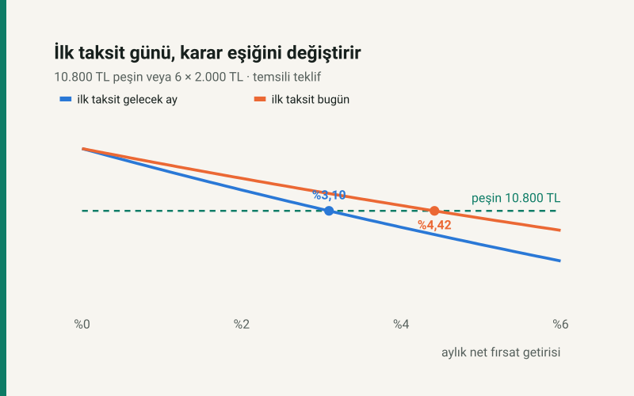
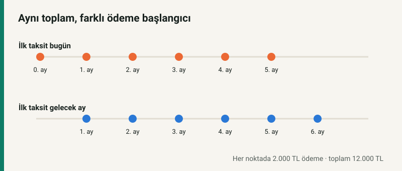

Kısa cevap
Peşin ödemenin maliyeti bugün 10.800 TL'dir. Taksit seçeneğini karşılaştırmak için altı adet 2.000 TL ödemeyi bugüne indirgemek gerekir. Gerçekten elde edilebilecek net aylık getiri eşik oranın altındaysa peşin indirim; üstündeyse parayı elde tutup taksitle ödeme matematiksel olarak avantajlıdır. Bu sonuç, ödemelerin zamanında yapılabildiği ve ek ücret olmadığı varsayımına bağlıdır.
Aynı etiket, iki ödeme takvimi
Temsili teklif: etiket 12.000 TL, bugün peşin fiyat 10.800 TL, peşin indirim 1.200 TL. Alternatif, toplamı 12.000 TL olan altı adet 2.000 TL taksit. İlk taksidin bugün mü yoksa bir ay sonra mı alınacağı teklifin değerini değiştirir. Bu, bir mağazanın güncel kampanyası veya bankanın oranı değildir.

Taksitleri bugüne nasıl taşıyoruz?
İlk taksit gelecek aysa bugünkü değer 2.000/(1+r) + 2.000/(1+r)² + … + 2.000/(1+r)⁶ olur. İlk taksit bugünse ilk 2.000 TL indirilmez; kalanlar birer ay önceye çekilir. Buradaki r, yıllık ilan edilen brüt faiz değil, ödeme aralarında gerçekten kullanılabilen net aylık getiridir. Altı ödemenin bugünkü değeri 10.800 TL'ye eşitlendiğinde, ilk taksit gelecek ay için yaklaşık %3,10; bugün için %4,42 bulunur.
| Net aylık getiri | İlk taksit sonraki ay: bugünkü değer | İlk taksit bugün: bugünkü değer | 10.800 TL peşine göre karar |
|---|---|---|---|
| %2 | 11.202,86 TL | 11.426,92 TL | İki takvimde de peşin |
| %4 | 10.484,27 TL | 10.903,64 TL | Sonraki ay taksit; bugün peşin |
%4 net aylık getiri varsayımında ilk taksit gelecek ay alınırsa taksitlerin bugünkü değeri 10.484,27 TL'dir; peşinden 315,73 TL düşük. İlk taksit bugün alınırsa 10.903,64 TL olur; bu kez peşin fiyat 103,64 TL düşük. Bu tutarlar faiz kazancı vaadi değil, belirlenmiş ödeme takvimlerinin aynı tarihteki matematiksel karşılığıdır.
Kendi teklifinizi aynı yöntemle sınamak için Peşin mi Taksit mi aracı peşin fiyatı, taksitli toplam fiyatı, taksit sayısını, ilk taksidin kaç ay sonra başladığını ve net getiri varsayımınızı alıp bu bugünkü değer karşılaştırmasını yapar.
Gerçek teklifte hangi kalemler sonucu değiştirir?
- İlk ödeme ve kesim günü: “Altı taksit”in başlangıcını sözleşme veya ödeme ekranından kontrol edin. Ay içindeki gün farkı büyük tutarda önemli olabilir.
- Net fırsat getirisi: TCMB'nin yayımladığı ortalama mevduat oranı kişisel net teklif değildir. Vergi, vade, bileşiklendirme ve paraya erişim şartından sonra gerçekten elde edilecek oranı kullanın; yıllık brüt oranı doğrudan 12'ye bölmeyin.
- Ek bedel: Taksit hizmet bedeli, sigorta, zorunlu ürün veya peşin fiyatla farklı kargo varsa ödeme günündeki nakit akışına ekleyin.
- Ödeme gücü: Taksiti ödemek için kredi kartı borcunu devretmeniz gerekiyorsa o maliyeti de modele koyun. Matematikte taksit avantajlı görünse bile nakit açığı yaratması kararı değiştirebilir.
Enflasyon oranını doğrudan r yerine koymayın: genel fiyat düzeyinin değişimi, elinizdeki parayla ödemeler arasında elde edebileceğiniz net ve erişilebilir getiri değildir. Satıcı açısından peşin tahsilatın değeri de ayrı bir sorudur; bu yazı alıcının iki ödeme planını karşılaştırır.
Yöntem ve sınırlar
Hesap, eşit 2.000 TL taksitleri ay sonunda veya bugün başlayarak tam aylık aralıklarla varsayar. Getiri her ay aynı ve net, taksitler kesin tarihlerde ve ek masrafsız ödenir. Eşik oran, bugünkü değer ile 10.800 TL peşin fiyatın eşit olduğu noktanın sayısal çözümüdür. Kuruşlar sonuçta yuvarlandı. Ürün fiyatı, getiri ve taksit imkânı tamamen temsili; 16 Ekim 2026 tarihli bir piyasa teklifi değil.
Kaynak ve tekrar üretim
- TCMB EVDS, haftalık ağırlıklı ortalama mevduat faiz oranları: karşılaştırmada kullanılabilecek piyasa bağlamı; 16 Ekim 2026'da kontrol edildi. Bu makaledeki %2 ve %4 bu seriden alınmadı, varsayımsal senaryolardır.
- Bu sayfadaki fiyat, bugünkü değer ve eşikler
hesap.jsmodülünden hesaplanır;sayi-testi.jsgörünen sayıları yeniden denetler. Yöntem nakit akışı karşılaştırmasıdır; kişisel yatırım veya borçlanma önerisi değildir.
Sık sorulan sorular
Faizsiz taksit her zaman peşinden avantajlı mı?
Hayır. Peşin indirim varsa iki seçeneği aynı tarihte bugünkü değerle karşılaştırın. Sonuç net getiriye ve ödeme günlerine bağlıdır.
İlk taksit bugün alınırsa sonuç değişir mi?
Evet. Bu örnekte eşik net aylık oran ilk taksit sonraki ay ise yaklaşık %3,10; bugün ise %4,42 olur.
Yıllık mevduat faizini 12'ye bölmek yeterli mi?
Hayır. Vergi, bileşiklendirme, gün sayısı ve erişim koşullarından sonra gerçekleşebilecek net aylık oranı hesaplayın.